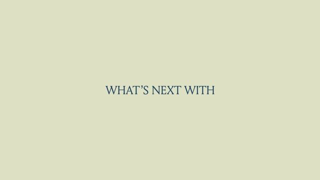
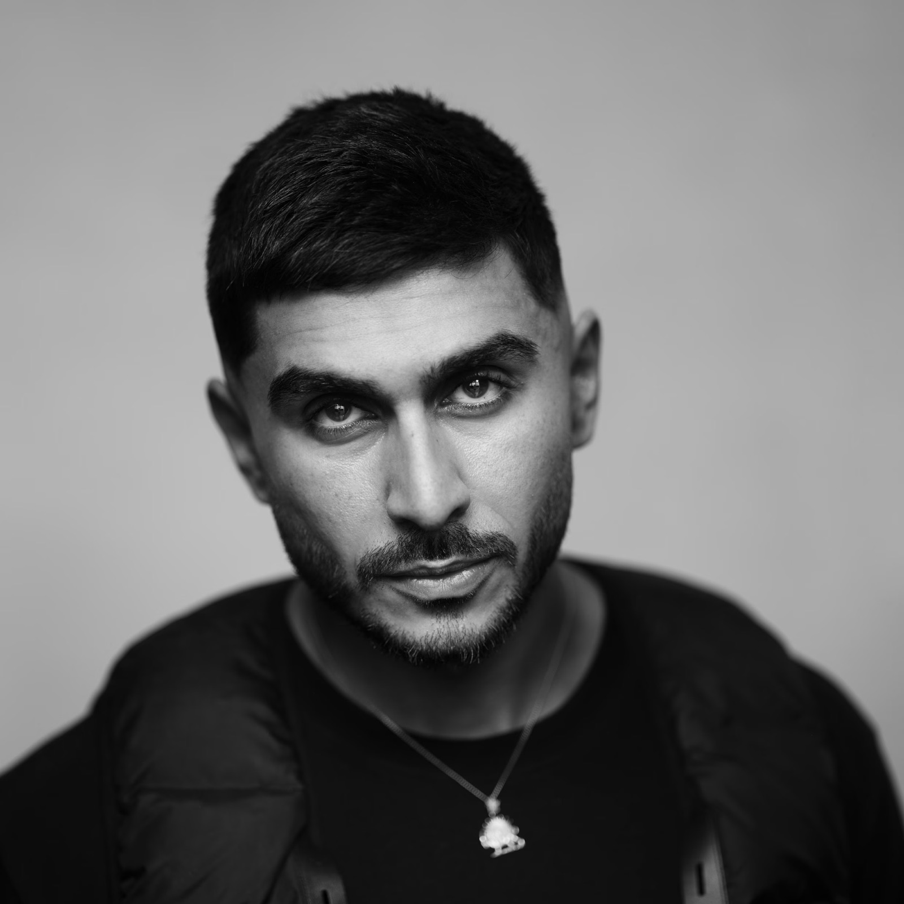
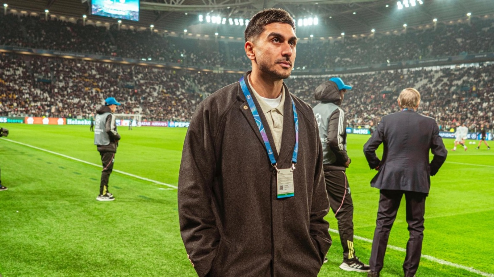
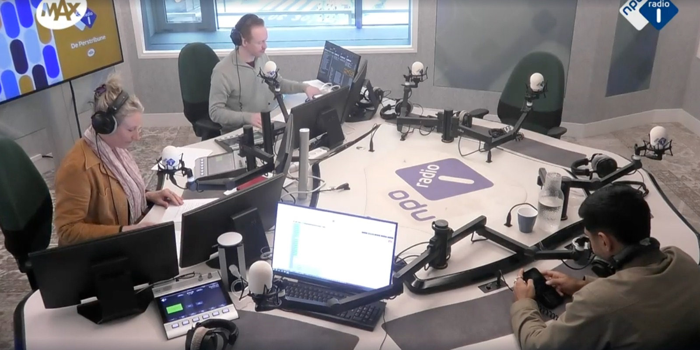
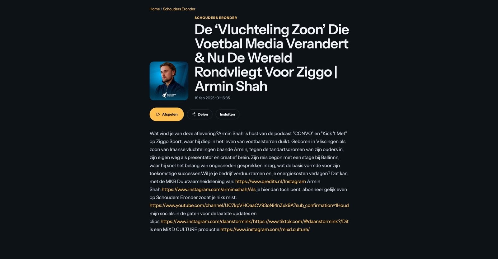
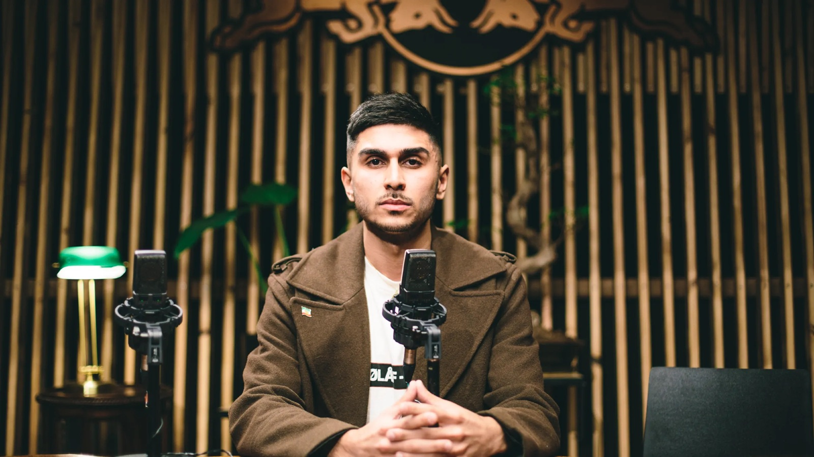
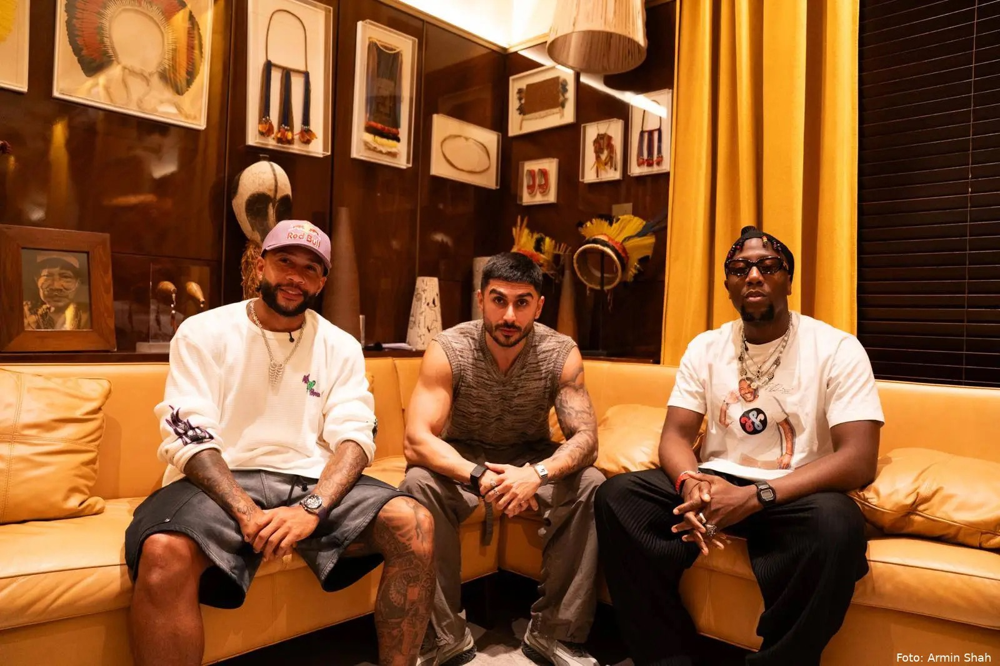

Media
BALLINNN
Editor & Writer
I started at eighteen as an editor and writer at hip-hop platform BALLINNN. It was my first experience working inside culture, and it taught me how stories, communities and media influence each other.
About
I started working in the creative industry at eighteen. Since then, I’ve moved through media, fashion, music, entertainment and sport, learning a different side of the creative process in each world.
More than a decade later, those experiences shape how I work as a creative strategist and storyteller today.
02 — The story
I learned how to understand an audience, recognise an opportunity, position an idea, develop the concept, bring it to life and make sure it reaches the people it was created for.
Editorial taught me to find the story. Marketing taught me to understand the audience. A&R taught me to recognise talent and potential. Creative direction taught me to connect strategy and ideas. Production taught me how to turn those ideas into something real.
Together, those experiences became my creative education.
04 — What I do
Today, I work with brands, athletes and media companies to turn cultural insight into ideas, and ideas into things people actually see, watch and engage with. My work moves between strategy and execution, from identifying the opportunity to taking it through production and delivery.
Cultural insight, positioning and creative strategy for brands, organisations and talent.
Developing original campaigns, entertainment formats and media concepts from the ground up.
Defining how ideas are positioned, distributed and connected to the audiences they are built for.
Taking ideas from concept to execution across film, television, digital and social.
Developing stories and content rooted in people, culture and entertainment.
Working across different industries has allowed me to experience culture from multiple perspectives. I have worked as an editor covering it, a marketer studying audiences, a creative developing ideas and a producer responsible for bringing those ideas to life.
That experience taught me to pay attention to how people speak, what they watch, who they follow and what they identify with. Those details often reveal where the strongest ideas are. When an idea feels natural to the people it is made for, cultural relevance follows.
06 — Selected partners
From independent platforms to global organisations, I have worked with brands, broadcasters and cultural companies across sport, media, fashion, music and entertainment.
07 — Experience
08 — Selected recognition
09 — Featured & interviews
Selected conversations and features about my work, career and perspective on culture.

What’s Next With Armin Shah
International profile exploring my background, work and perspective across culture, football, fashion and media.
Watch ↗︎
‘Door straattaal te spreken durven voetballers zich kwetsbaarder op te stellen’
Profile and interview about my work in football media and the development of Kick ’t Met.
Read ↗︎
‘Dat getuigt van ambitie én het nemen van risico’
Interview with one of the Netherlands’ leading media and advertising publications about creativity, media and the work that inspires me.
Read ↗︎
Armin Shah on Dutch national radio
Long-form radio interview about my career, media, football and the ideas behind my work.
Listen ↗︎
Armin Shah
Long-form conversation with Fernando Halman about my background, career and journey through the creative industry.
Watch ↗︎
De Man Achter Kick ’t Met & CONVO
Long-form conversation about building CONVO, working at Complex, creating Kick ’t Met and developing a career in media.
Watch ↗︎
Armin Shah
Conversation about my personal background, career and the journey from independent media to travelling the world for football and television.
Listen ↗︎
‘We willen het geluid van een generatie zijn’
An early interview about CONVO, hip-hop media and creating a new space for conversations around youth culture.
Read ↗︎
Armin Shah & Jefferson Osei over Memphis en Neymar
Interview about Kick ’t Met, our approach to interviewing footballers and conversations with players including Memphis Depay and Neymar Jr.
Read ↗︎10 — At a glance
11 — FAQ
Armin Shah is an award-winning creative strategist and storyteller working across football and culture. His career spans more than a decade across media, fashion, music, entertainment and sport.
Armin works across creative and cultural strategy, concept development, marketing, storytelling and production. His involvement can range from defining the initial strategy and developing an idea to producing the final work and shaping how it reaches an audience.
Armin’s work includes founding CONVO Talkshow, helping establish Complex Networks in the Benelux as Creative Director, developing and producing original formats for Ziggo Sport and co-founding The Legacy Show with former Netherlands international Ryan Babel.
The Legacy Show is an independent media format co-founded by Armin Shah and former Netherlands international Ryan Babel. The show brings together athletes, entrepreneurs and creatives for conversations about football, business, creativity and culture.
Armin’s career spans media, fashion, music, entertainment and sport, with experience at organisations including Filling Pieces, Warner Music Group, Complex Networks and Ziggo Sport.
Yes. Armin works internationally with brands, athletes, media companies and organisations across sport and culture.
Projects can include creative and cultural strategy, brand positioning, marketing and audience strategy, concept and format development, branded storytelling and creative production.